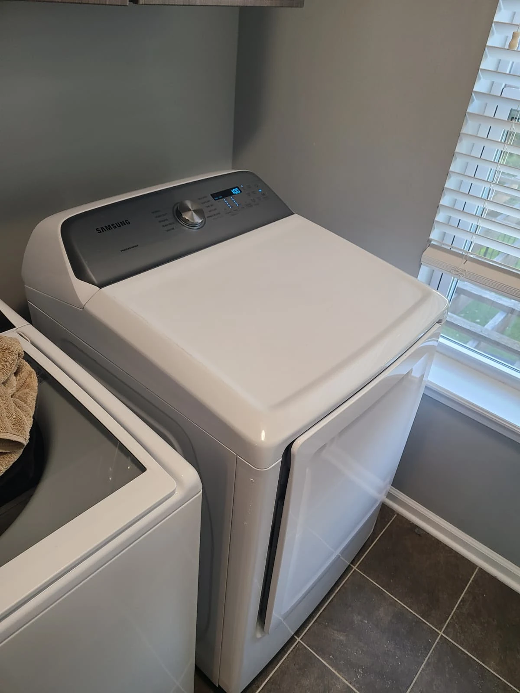
A Samsung Dryer That Stopped Heating
The homeowner in Carmel, Indiana, contacted Alex Appliance Repair because their Samsung dryer was not heating. We opened the appliance to investigate and found a burned-out heating element with a broken coil.
The completed repair included a replacement heating element, two front and two rear drum support rollers, and a new belt idler pulley. With the dryer apart, we also cleaned its interior and the felt around the drum before reassembly and testing.
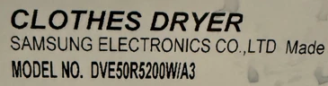
Model Identification: DVE50R5200W/A3
The original label on this dryer identifies it as Samsung DVE50R5200W/A3. The model-number crop comes directly from the service photograph.
The three diagrams in the visit overview show the drum support rollers, heating element and idler pulley. The photographs below document the actual dryer and the work carried out in Carmel.
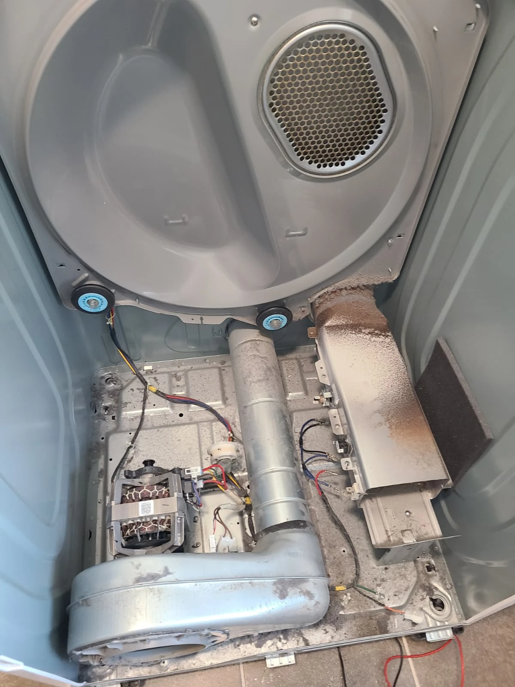
Opening the Dryer for Diagnosis
With the drum removed, the heater housing, drive components and cabinet floor were accessible. The initial photograph shows the lint and dust present inside the appliance before cleaning.
The confirmed heating fault was the broken element. The internal buildup was cleaned during the repair, but it was not established as the cause of the element failure.
The Burned-Out Heating Element
The removed element had a visibly broken coil. These photographs show the damaged coil close up and the element outside its housing.
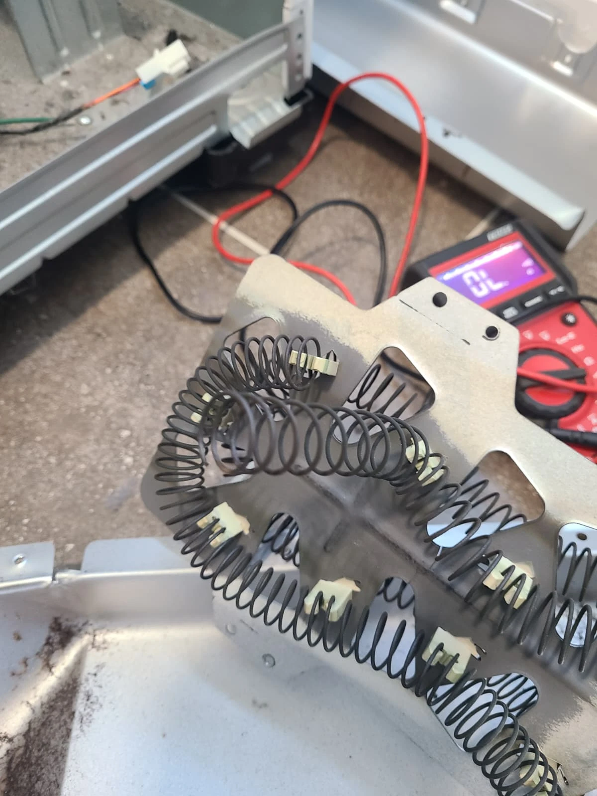
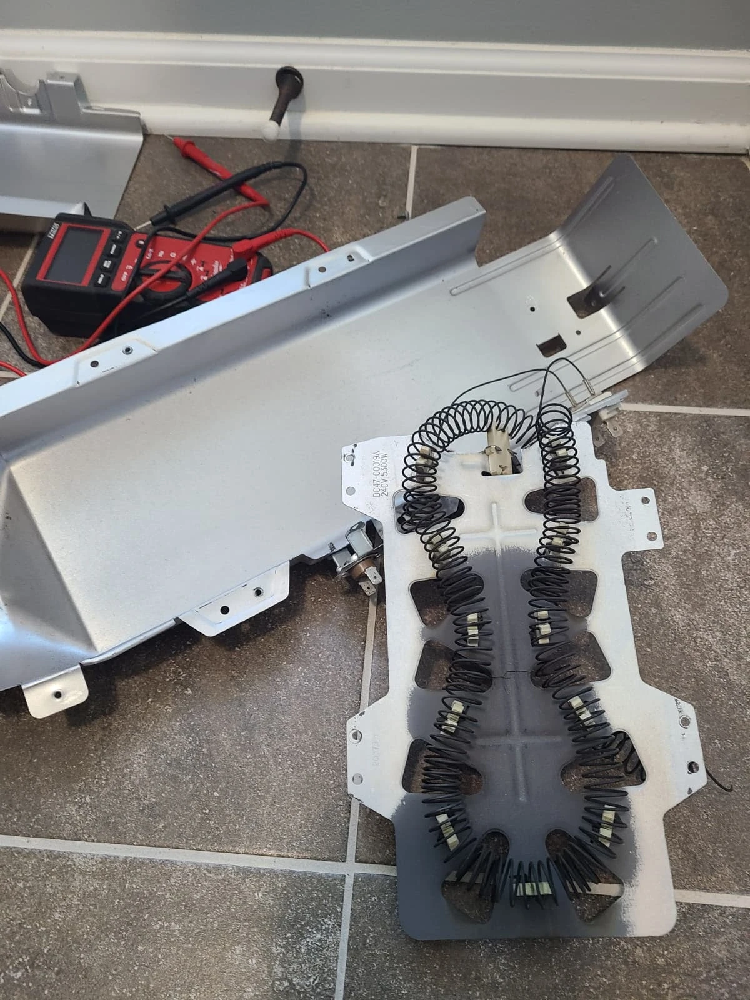
We replaced the failed heating element to address the no-heat complaint. The support rollers and idler pulley were also replaced during this visit; they were separate parts of the repair, not the diagnosed cause of the missing heat.
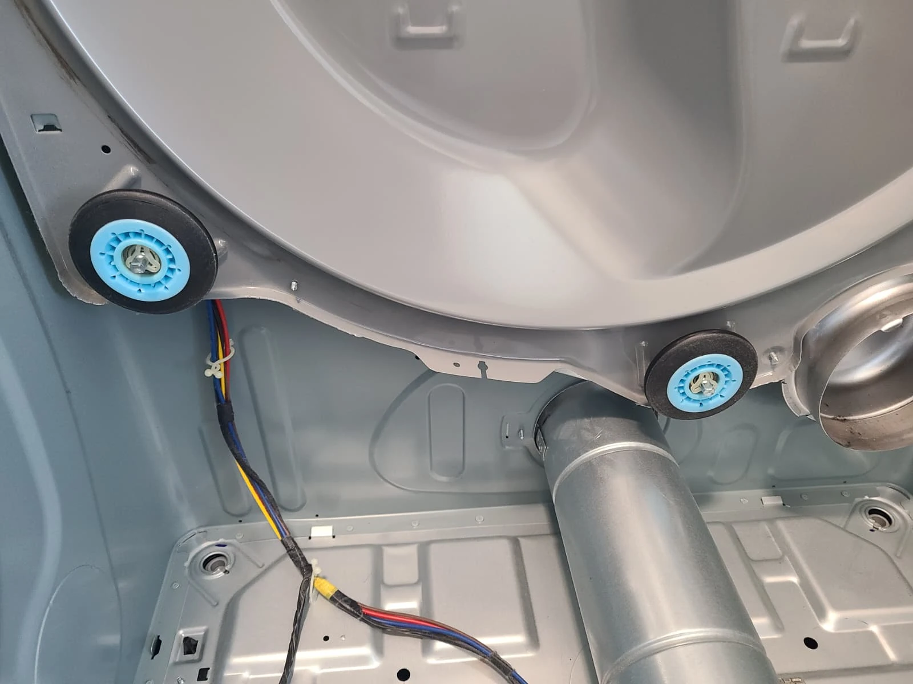
Replacing All Four Drum Support Rollers
The dryer received four replacement drum support rollers: two at the front and two at the rear. The photograph shows the rear pair in the cleaned cabinet; the drum diagram above identifies both support locations.
These rollers support the drum as it turns. Replacing the full set was part of the work completed while the dryer was disassembled.
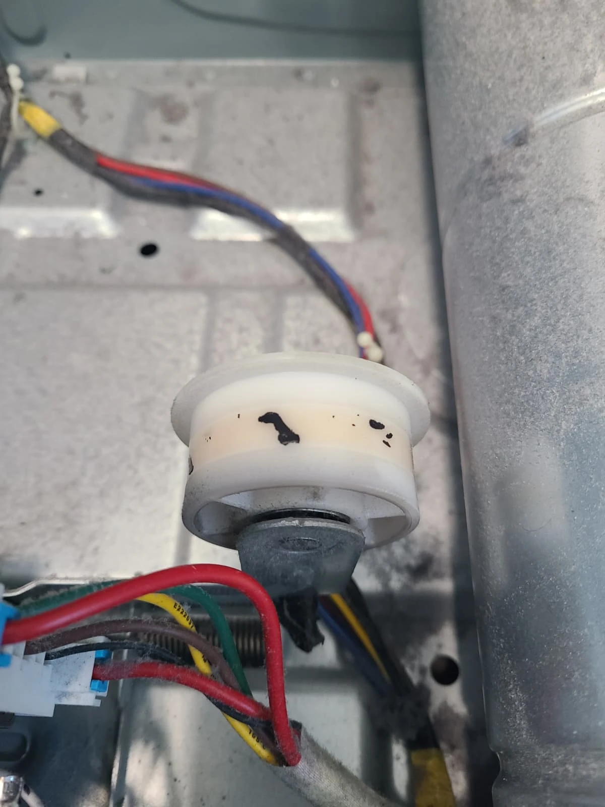
Replacing the Belt Idler Pulley
We also replaced the idler pulley, which maintains tension on the drive belt. This close-up documents the original pulley before replacement.
The cleaned interior shown later in the article includes the replacement pulley beside the motor. The repair record covers pulley replacement, not a replacement belt.
Internal Air Duct: Before and After Cleaning
Lint had collected inside the internal air duct. With the duct removed, we cleaned the accumulated material from its accessible surfaces before reinstalling it.
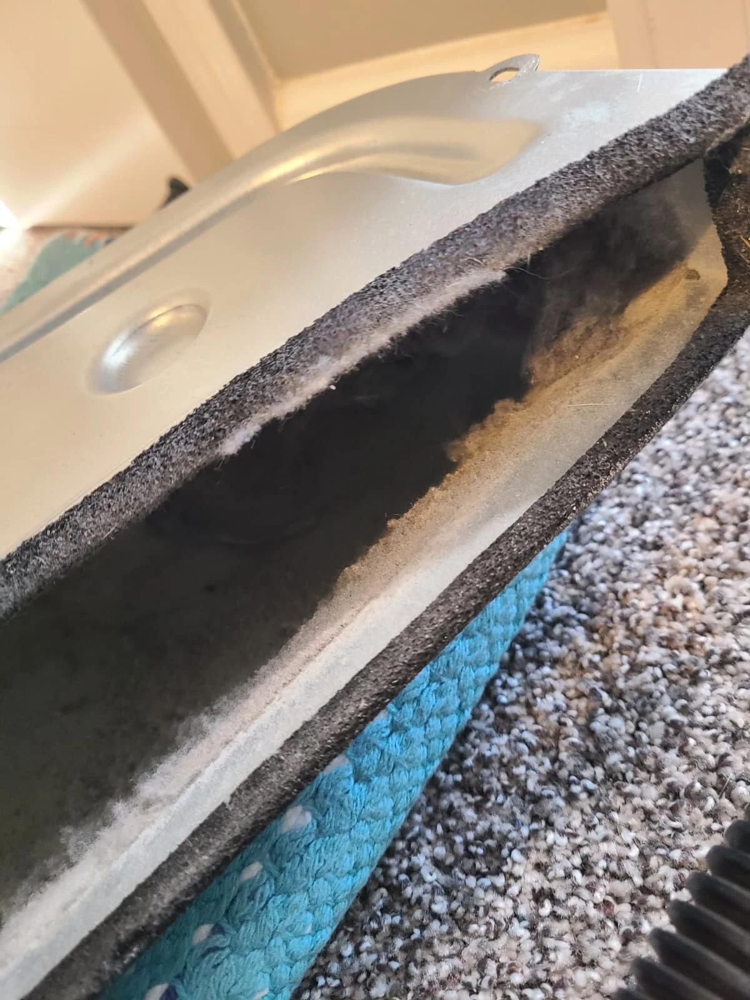
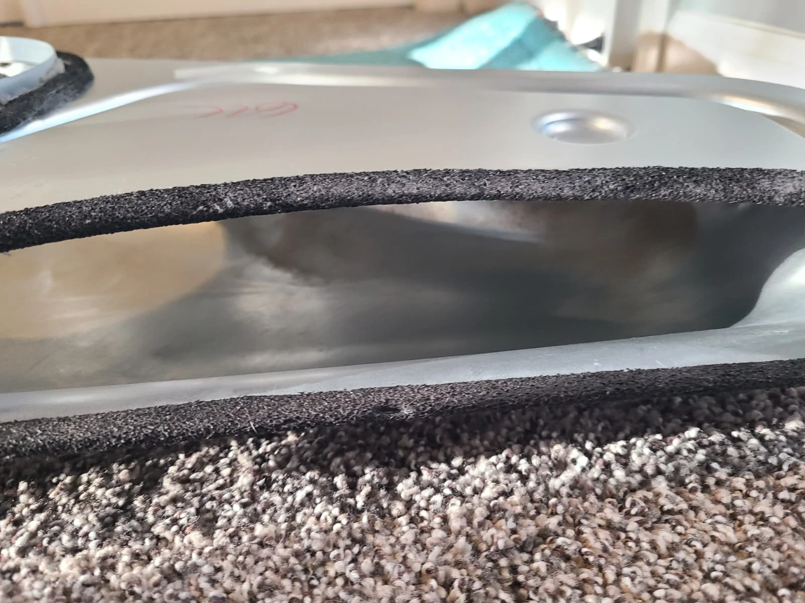
These images show the internal dryer duct before and after cleaning. This work was inside the appliance; it is not a claim that the full household exhaust-vent run was cleaned.
Cleaning the Drum Felt
The felt around the drum was cleaned as part of the service. The close-ups show the lint-covered felt before the work and its condition after cleaning.
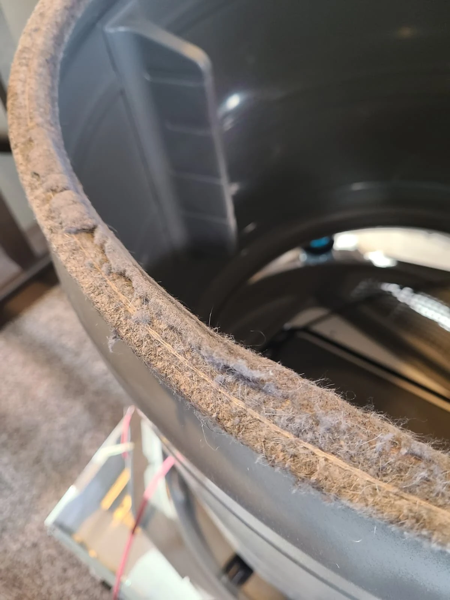
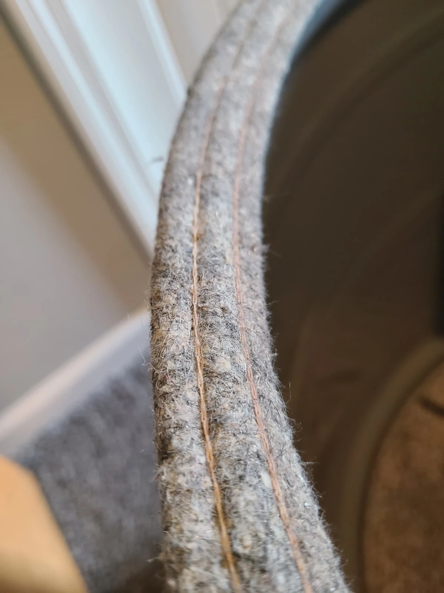
The existing felt was cleaned and retained. It was not replaced during this repair.
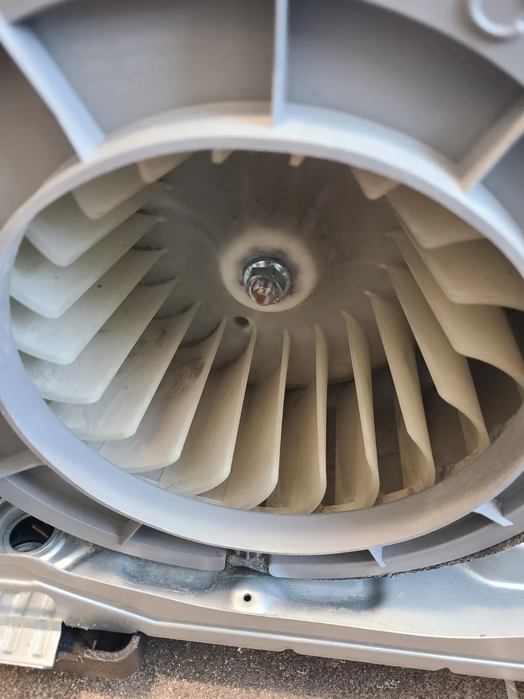
Cleaning the Blower and Interior
The cleaning extended to the accessible interior and blower area. This photograph shows the blower wheel after cleaning.
Taking care of the internal cleaning while the dryer was open allowed us to remove the visible lint and dust before putting the appliance back together.
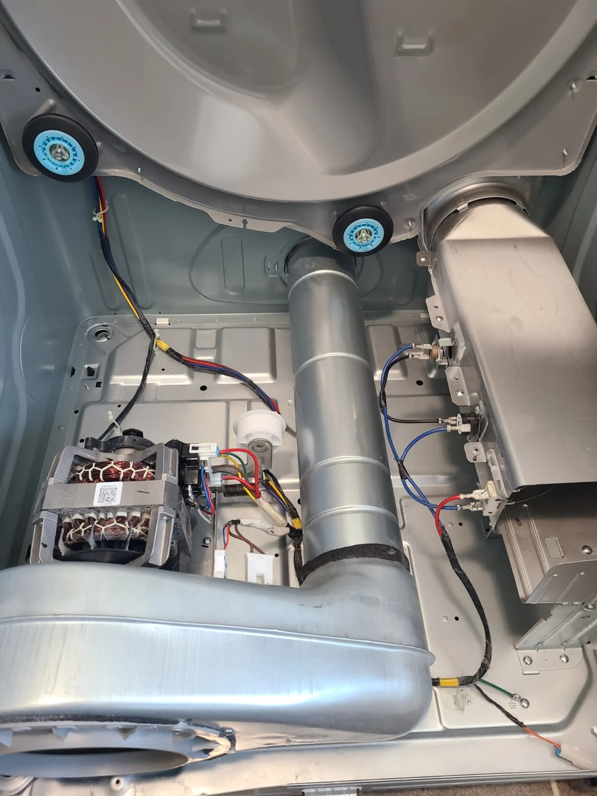
Reassembling the Dryer
With the replacement heating element, four support rollers and idler pulley in place, we reassembled the dryer in the reverse order of disassembly. The photograph shows the cleaned cabinet and installed components before the drum and panels were returned.
The interior cleaning and drum-felt cleaning were completed before final assembly. The next step was to test the reassembled dryer.
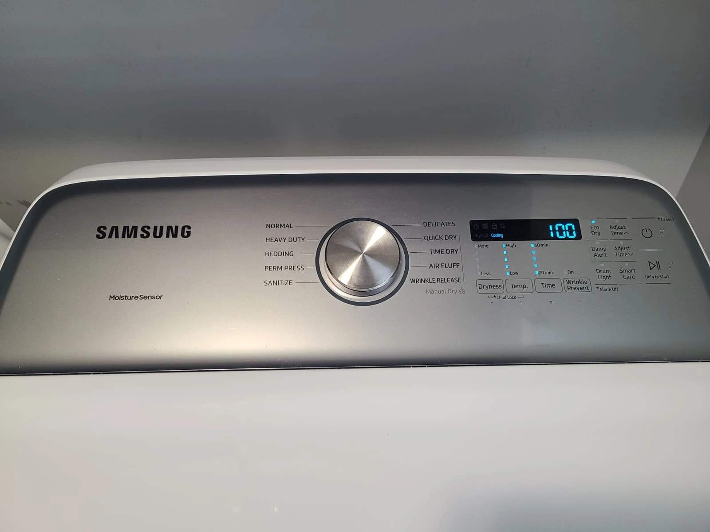
Final Testing: Heating Restored
After reassembly, we tested the dryer and confirmed that it heated again. The repair was completed successfully, resolving the customer's original no-heat complaint.
This Carmel service combined heating-element replacement with replacement of all four drum rollers and the idler pulley, plus internal cleaning and cleaning of the drum felt.
Questions About This Repair
What caused this dryer to stop heating?
Diagnosis found a burned-out heating element with a broken coil. Heating was restored after the element was replaced and the dryer reassembled.
How many drum rollers were replaced?
Four: two front rollers and two rear rollers. The belt idler pulley was replaced as well.
Was the drum felt replaced?
No. The felt was cleaned and retained during this service.
Does every Samsung dryer without heat need an element?
This article documents one confirmed repair. Another dryer with the same symptom needs its own diagnosis before parts are selected.
Samsung Dryer Repair in Carmel, Indiana
For a Samsung dryer that is not heating, contact Alex Appliance Repair for dryer repair in Carmel. Share the full model number and the symptoms when requesting service.
Explore our Samsung appliance repair services, dryer repair and more documented repair stories. We explain the findings and estimate before approved work and test the appliance after repair.
Alex Appliance Repair is an independent appliance repair service operated by Aksenov LLC. Call (463) 248-8429 to discuss your dryer.
Book dryer repair in Carmel